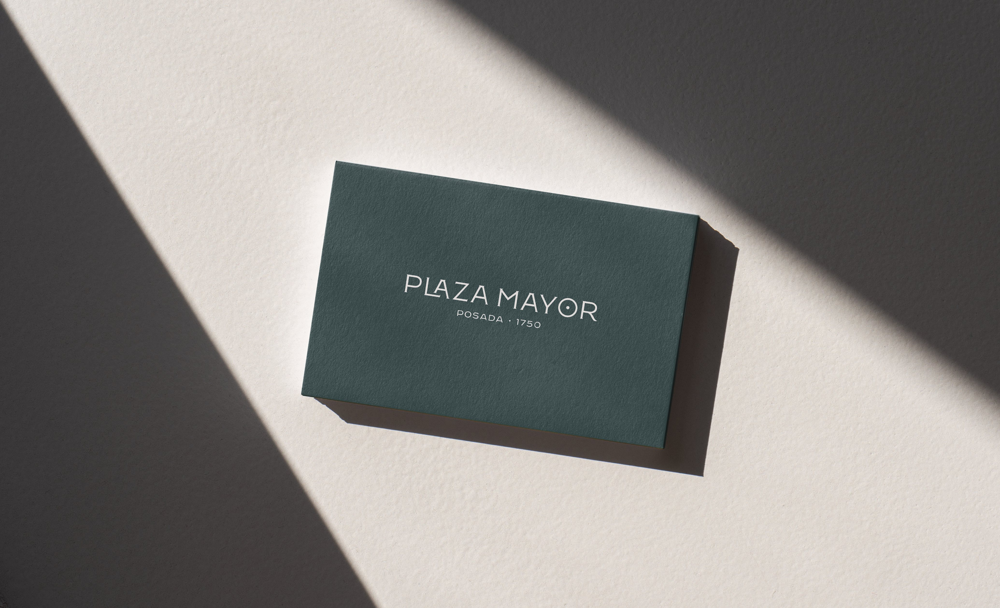
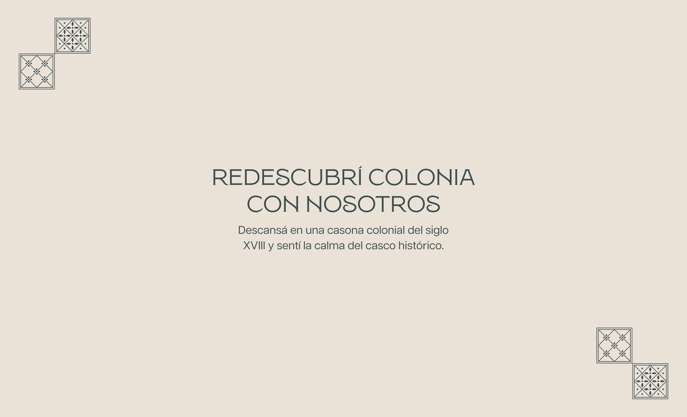
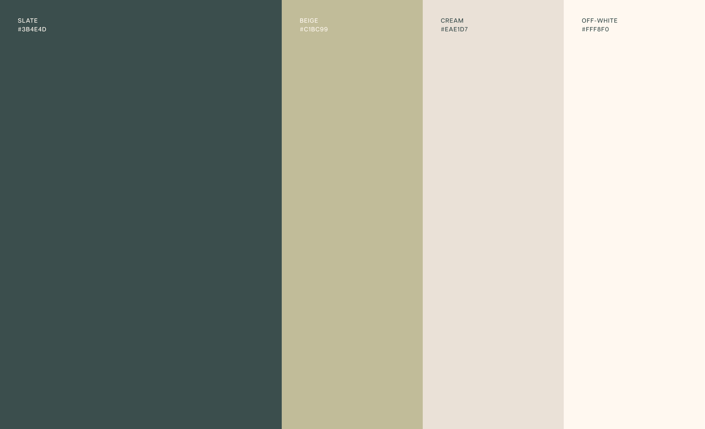
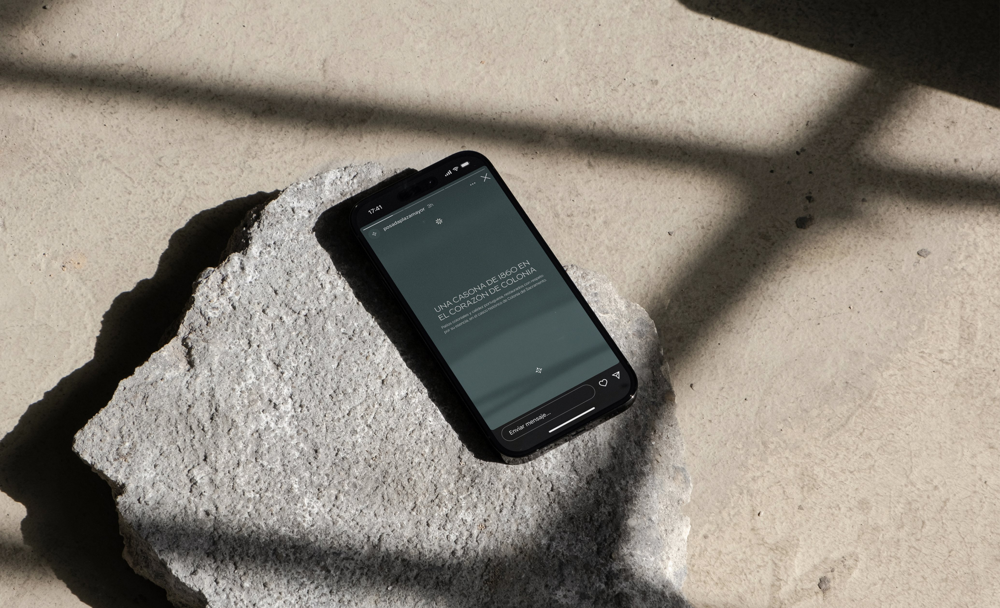
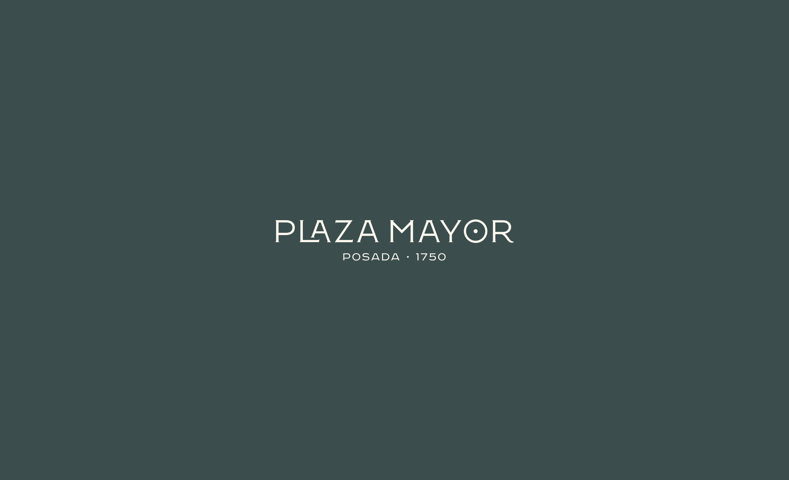
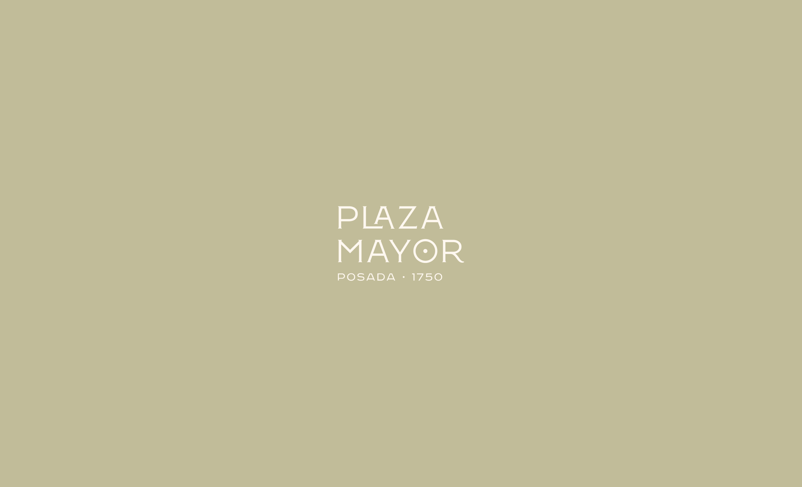
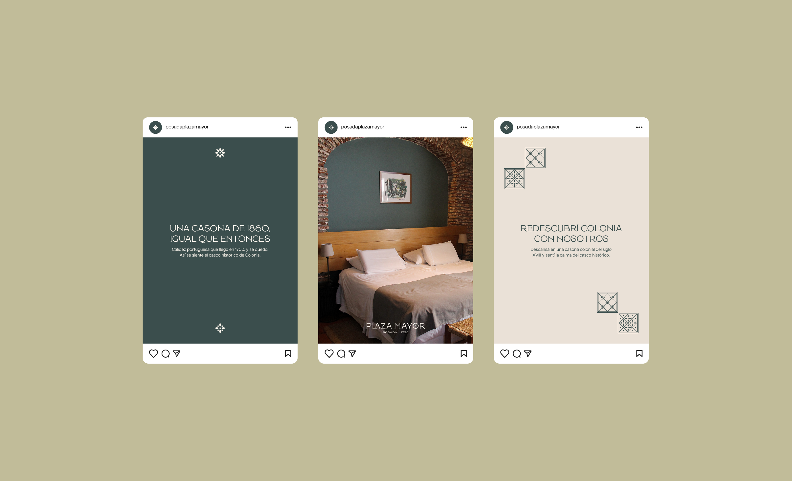
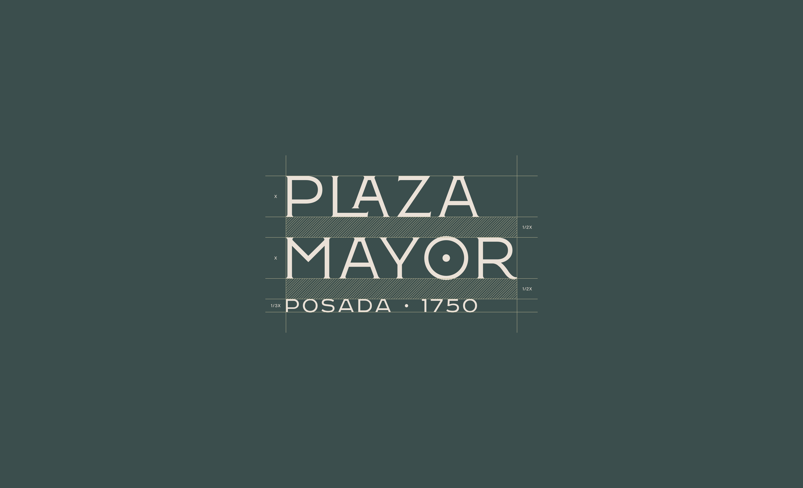

Hay lugares que se visitan. Y hay lugares que se sienten. Colonia del Sacramento tiene ese efecto.
Las calles de piedra no apuran. La luz entra distinto. El tiempo, también. Plaza Mayor vive en una casona de 1860 y en un rancho portugués de 1700.
Dos construcciones que todavía respiran como entonces: paredes gruesas, patios con sombra, silencio que no hay que buscar. No es un destino para llenar días. Es un lugar para vaciarlos un poco.
There are places you visit. And there are places you feel. Colonia del Sacramento has that effect.
The cobblestone streets don't rush you. The light comes in differently. So does time. Plaza Mayor lives in an 1860 mansion and in a 1700 Portuguese ranch house.
Two buildings that still breathe as they once did: thick walls, shaded courtyards, silence you don't have to go looking for. It's not a destination for filling days. It's a place for emptying them a little.






